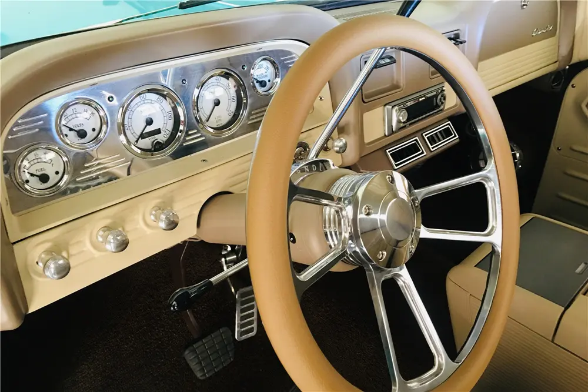
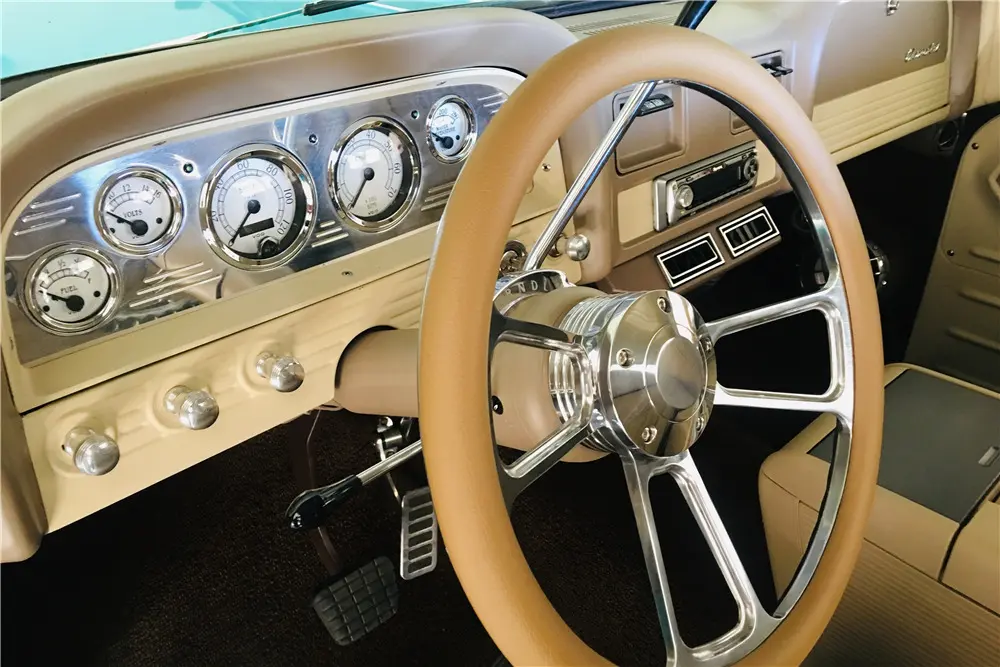

DM MOTORS GARAGE
DM MOTORS GARAGE

 

Esta Chevrolet Apache 1960 llegó a nuestro taller como un ícono de la durabilidad y el estilo de las camionetas de la década de los 60.
El cliente buscaba una restauración completa que no solo la devolviera a su esplendor original, sino que también la modernizara sutilmente para el uso diario, manteniendo su inconfundible estética clásica.
| Motor: | V8 283ci (4.6L) restaurado y mejorado |
| Potencia: | 200 HP @ 4,400 RPM |
| Transmisión: | Automática de 3 velocidades (Turbine Drive, original restaurada) |
| Aceleración 0-100 km/h: | No aplica (enfoque en el estilo y la conducción relajada) |
| Peso: | 1,650 kg (aproximado) |
| Carrocería: | Acero original |
| Color original: | Azure Blue con toldo Cloud White |
| Interior: | Cuero blanco con alfombra gris claro, detalles cromados. |
Esta camioneta clasica me la heredo mi abuelo que es originario de Sinaola y el la adquirio desde su venta en la consecionaria.
Y al dia de hoy yo quise recordarlo con un restauracion en DM MOTORS que lograron hacerla ver como recien salida de fabrica.